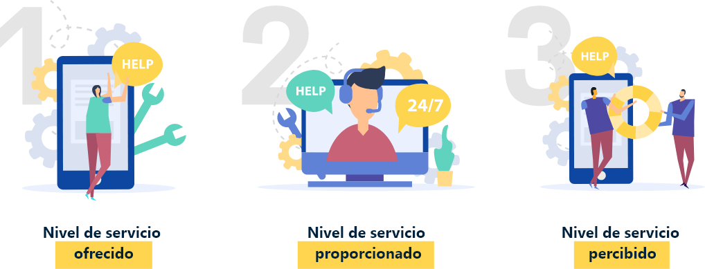
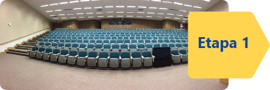
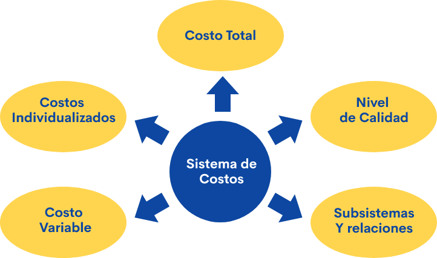
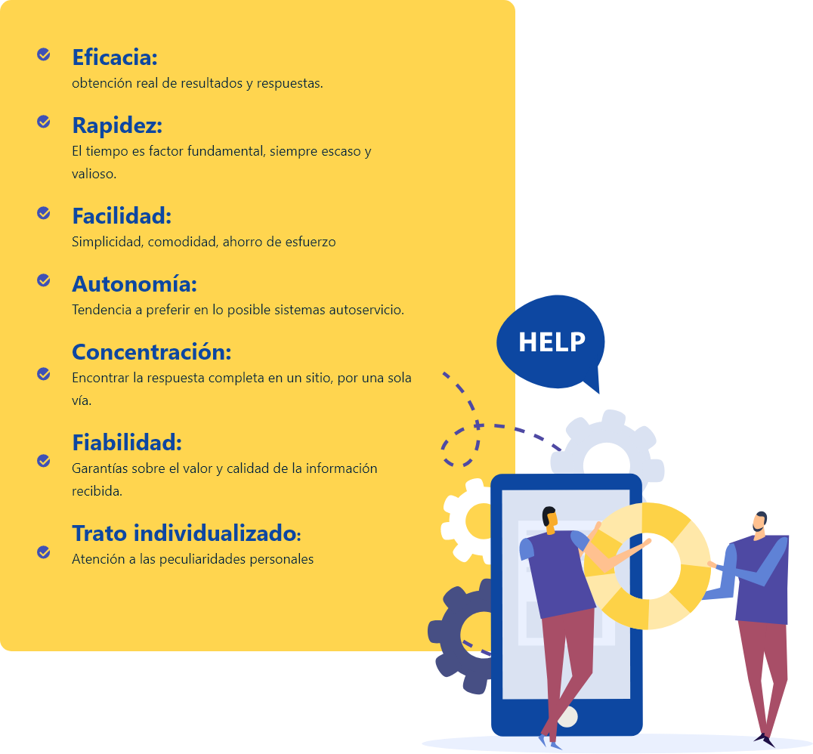
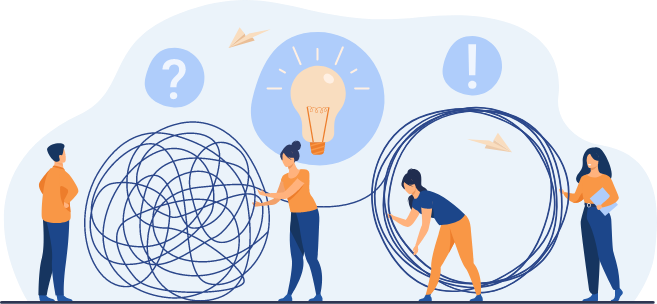
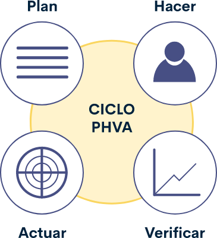
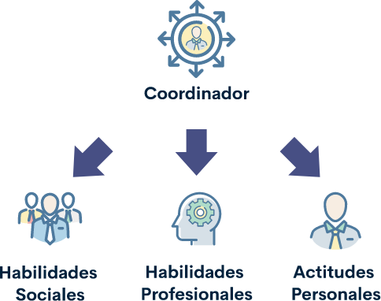

1. Logística
La gestión del servicio de traducción e interpretación en lengua de señas se realiza en diversos escenarios o contextos que requieren capacidad de personal con habilidades de comunicación oral, administración del trabajo, conocimientos técnicos, profesionales, contextuales y económicos. La logística en el servicio de interpretación requiere de una planeación que considere el evento normal y los riesgos que conlleva el servicio mismo.
A continuación se abordarán los elementos básicos sobre la logística de un servicio general y posteriormente la logística que atañe al servicio de interpretación.
La logística es un término cada vez más utilizado en nuestros días. Originalmente, la palabra logística se utilizó como un concepto militar que proviene del francés “logistique”, para referirse al transporte, el suministro y el alojamiento de las tropas.
En la actualidad, el término es utilizado en los sectores del marketing y distribución empresarial.
1.1 Definición de logística
Para que un producto llegue a su destino, tuvo que pasar por un extenso proceso que va desde la obtención de las materias primas, el embalaje, transporte, recepción, inspección, clasificación, transformación, almacenamiento y entrega al cliente, entre otros asuntos.
Esta red de medios, métodos e infraestructura
garantiza la conservación y calidad de un producto o servicio. Esto es lo que se conoce como logística.
Más allá de los inventarios tangibles y cuantificables, se encuentra una logística enfocada a la capacidad de gestión, lo que incluye la calidad de los servicios prestados y la satisfacción del cliente. Esto es lo que se conoce como “Logística de Servicio”.
A partir de lo anterior, se marca la existencia de la diferencia entre la logística de productos y la de servicios, entendiendo la primera desde una naturaleza susceptible de ser acumulable, cuantificable y transportable, mientras que la segunda, hace referencia al cliente y la entrega de una experiencia satisfactoria.
El servicio al cliente puede analizarse desde tres puntos de vista:

Componentes de un buen servicio al cliente
Calidad, variedad, costo, tiempo de respuesta, disponibilidad.
La prestación de servicios busca eliminar la brecha entre el nivel de servicio ofrecido y el nivel de servicio percibido en cada uno de sus componentes: calidad, variedad, costo, tiempo de respuesta, disponibilidad. Para lograr esto, se hace necesario conocer el contexto de las necesidades y gustos de los clientes, para el perfeccionamiento continuo del sistema de gestión logística.
1.2 Etapas o fases
Para que un servicio de interpretación pueda aplicarse eficazmente, primero es necesario conocer el marco normativo que regula esta función:
“Intérprete para Sordos”
Son personas con amplios conocimientos de la Lengua Manual Colombiana que puede realizar interpretación simultánea del español hablado en la Lengua Manual y viceversa. De acuerdo con la Sentencia C-128-02. y la Ley 324 de1996, en el entendido de que “también son intérpretes para sordos aquellas personas que realicen la interpretación simultánea del castellano hablado a otras formas de comunicación de la población sorda, distintas a la Lengua manual, y viceversa”; además de que se requiere que cumpla con las siguientes etapas de la logística:

Analizar los diversos escenarios en que se pueden prestar el servicio: locación, iluminación, sonido, equipos tecnológicos ,ubicación, visibilidad del intérprete.
Organizar planes de contingencia en caso de que algún paso resulte mal o exista algún inconveniente.
Conocer de antemano los temas y contenidos que se impartirán durante la clase, exposición o discurso.
Tener conocimiento de las características de la población objeto del servicio, para acordar un vocabulario pertinente al usuario.
“El Estado garantizará y proveerá la ayuda de intérpretes idóneos para que sea éste un medio a través del cual las personas sordas puedan acceder a todos los servicios que como ciudadanos colombianos les confiere la Constitución. Para ello el Estado organizará a través de Entes Oficiales o por Convenios con Asociaciones de Sordos, la presencia de intérpretes para el acceso a los Servicios mencionados” Ley 324 (1996).
Acordar los tiempos de relevo con el intérprete de apoyo, los tiempos de llegada y salida, y los tiempos de inicio y finalización del servicio.
Conocer las normas de comportamiento establecidas en cuanto al protocolo y etiqueta para prestar un servicio de interpretación con calidad.
Ejecución del servicio.
Evaluación de resultados y satisfacción del cliente.
1.3 Criterios
Los criterios en el proceso logístico permiten identificar el grado de satisfacción del cliente. Estos abarcan:
Disponibilidad.
Rapidez.
Fiabilidad.
Costo.
Servicio.
Calidad.
1.4 Costos
Es necesario comprender los costos que conlleva un servicio de interpretación, teniendo en cuenta que en los parámetros estratégicos de costos logísticos intervienen los siguientes ítems: costos variables, costos individualizados, nivel de calidad, subsistemas relacionados, costo total, entre otros.

1.5 Objetivos
¿Por qué?
Obedece a los objetivos del servicio de interpretación, es decir, incrementar las capacidades de comprensión y competencia en el mercado, lograr la permanencia de los clientes y generar una mayor rentabilidad económica como resultado de los servicios ofrecidos.
1.6 Análisis del recurso
¿Por qué?
Es el análisis del recurso que considera los diferentes componentes que intervienen en el servicio que se presta. Por ejemplo, los recursos, entre otros pueden ser:
Tecnológicos.
Locativos.
Económicos.
Materiales.
Organizativos.
Educativos.
Humanos.
1.7 Análisis de los destinatarios
¿A quién?
Esto se refiere al análisis de los destinatarios: la persona, grupo de personas o la entidad a quién va dirigido el servicio de interpretación, con sus particularidades individuales. Quien realiza el servicio deduce la manera más apropiada para intervenir.
1.8 Medios y servicios
¿Cómo? ¿Cuándo? ¿Dónde?
Responde a los medios y servicios para la interpretación, teniendo en cuenta la presentación personal, la ubicación, el estado emocional del intérprete y el uso de plataformas tecnológicas como medios alternos para prestar dicho servicio, entre otros.
1.9 Evaluación de los servicios
Evaluación de los servicios - ¿Cómo se evaluará?
La evaluación de la calidad del servicio permite conocer la opinión de los usuarios sobre las particularidades del trabajo realizado que contribuyen a su plena satisfacción.
Hay 5 elementos que los consumidores toman en cuenta para la evaluación:
Elementos tangibles
Apariencia del intérprete y presentación personal en estado óptimo.
Cumplimiento
Desarrollar el servicio de manera correcta y oportuna.
Disposición
Ofrecer un servicio ágil y claro.
Perfil del personal
Dominar el tema, solucionar los contratiempos e inspirar confianza.
Empatía
Participar en la realidad del cliente de forma objetiva y racional.
1.10 Planificación y producción
Después de tener claro el por qué, qué, a quién, cómo, cuándo y dónde, es necesario aplicar los procesos logísticos de acuerdo con el contexto y el usuario. Así:
Perfiles de los intérpretes.
Distribución del recurso humano de acuerdo con el usuario.
Distribución de tiempos.
Temáticas.
Materiales de apoyo.
Vocabulario.
Montaje y disposición de equipos (locación, iluminación, sonido, equipos tecnológicos, ubicación y visibilidad del intérprete).
Ejecución del evento.
Evaluación de resultados.
2. Atención al usuario
2.1 Definición
Hablar de atención al usuario no es solo definir los parámetros relacionados con la comunicación interna o externa, y sus correspondientes canales para garantizar una adecuada y oportuna respuesta.
Es también proporcionar los estándares de comunicación y de la proyección de una imagen personal, segura, eficiente y eficaz, parasatisfacer de manera oportuna los requerimientos que solicitan nuestros usuarios.
“El Estado Colombiano reconoce la Lengua Manual Colombiana, como idioma propio de la Comunidad Sorda del País”.
“Las entidades estatales de cualquier orden, incorporan paulatinamente dentro de los programas de atención al cliente, el servicio de intérprete y guía intérprete para las personas sordas y sordociegas que lo requieran de manera directa o mediante convenios con organismos que ofrezcan tal servicio.”
2.2 Relaciones interpersonales
La definición de atención al usuario se da como el conjunto de elementos intangibles, acciones integradas, interacciones personales y actitudes para satisfacer la necesidad de un cliente, lo que requiere, además, de un protocolo y de una política.
Las expectativas de los usuarios son diferentes y variadas por lo que es fundamental conocerlas y contar con ellas. El ideal de éxito y calidad del servicio reside en superar esas expectativas. Ello no significa endosar información o instrucciones innecesarias, pero sí dar una respuesta adecuada, completa, rápida y fiable, que aporte valor adicional.
Estas expectativas serán mucho más exigentes, cuando se habla de un servicio de interpretación en la que la atención al usuario lleva implícita una actividad que permite que varias partes comprendan un mensaje a través de un sistema de signos, gestos y expresiones y que requiere una comprensión detallada de la cultura sorda y todos sus matices.
Entre las expectativas del usuario actual pueden citarse:
Eficacia:
obtención real de resultados y respuestas.
Rapidez:
El tiempo es factor fundamental, siempre escaso y valioso.
Facilidad:
Simplicidad, comodidad, ahorro de esfuerzo.
Autonomía:
Tendencia a preferir en lo posible sistemas autoservicio.
Concentración:
Encontrar la respuesta completa en un sitio, por una sola vía.
Fiabilidad:
Garantías sobre el valor y calidad de la información recibida.
Trato individualizado:
Atención a las peculiaridades personales.

Hablar entonces de atención al usuario, indica la necesidad de establecer unos parámetros que respondan a un protocolo de servicio, pero en especial a una política de este.
La importancia de tener definida una política de servicio al cliente radica en la estandarización de procedimientos que los empleados deben seguir al momento de atender una solicitud, lo que sin duda alguna marca la personalidad de una organización.
La política de servicio al cliente son las orientaciones, directrices o procedimientos que rigen la actuación de una persona o entidad frente a sus clientes.
Los objetivos en la política de servicio al cliente corresponden a los propósitos de la prestación del servicio en relación a la atención al usuario y su necesidad, además, deben estar alineados con los objetivos de su empresa y del servicio a prestar.
Algunos pueden ser:
Como comunicarle al cliente la existencia de un nuevo producto o línea de producto.
Como medir la satisfacción del cliente, a través de encuestas aleatorias.
Plan de incentivos, de acuerdo al nivel de consumo por parte del cliente.
Evaluar las políticas de servicio de su competencia permite definir estándares, perfiles y protocolos de atención, así se puede corresponder de manera eficaz y eficiente a lo que se está ofertando y a lo que se está demandando.
Evaluar las políticas de servicio de su competencia permite definir estándares, perfiles y protocolos de atención, así se puede corresponder de manera eficaz y eficiente a lo que se está ofertando y a lo que se está demandando.
Tener claro las políticas de servicio de su competencia, le indica que los procedimientos e instructivos deben estar documentados y responder al paso a paso de lo que debe hacer cada empleado al momento de contestar una llamada, recibir una queja u orientar un cliente para adquirir un producto o servicio. La documentación de los procedimientos e instructivos consiste en describir paso a paso lo que debe hacer cada empleado al momento de contestar una llamada, recibir una queja u orientar un cliente al momento de adquirir un producto o servicio, etc. Es recomendable, realizar procedimientos cortos y prácticos.
Al tener establecida una política de servicio al cliente, como en todo proceso, es fundamental hacer una evaluación periódica que permita recoger fortalezas de lo que se está haciendo, pero en especial, aspectos que son sujeto de mejora y que daría valor agregado en cuanto se superen.
Como último paso, la política de servicio al cliente debe ser compartida con los empleados, puede ser a través de una capacitación o charla programada donde todos escuchen el procedimiento que deben seguir al momento de atender la solicitud de un cliente, lo que permitirá un mayor control, seguimiento y posterior evaluación de esta.
3. Trabajo en equipo
3.1 Definición

El trabajo en equipo como esfuerzo integrado para lograr un propósito, meta u objetivo por parte de un grupo de personas es la representación de un trabajo efectivo que parte de ideas comunes, decisiones consensuadas, fortalecimiento de habilidades y destrezas; además de facilitar la cooperación, autonomía y la motivación.
3.2 Relaciones interpersonales con los colegas
Las relaciones que se establecen con los colegas podrán ser muy diferentes en función de la actividad que se realiza, el lugar de trabajo, la cantidad de empleados con las que se establece relación y coordina acciones, el tiempo de trabajo, la cultura, condiciones, situaciones y ámbitos como el caso de la interpretación y traducción de lengua de señas, que pone de manifiesto el establecimiento de parámetros y ciertos códigos de conducta que permitan interacciones recíprocas y acuerdos para trabajar en equipo.
El manejo de unas adecuadas relaciones interpersonales con los colegas optimiza el desempeño de las funciones desde el concepto de equipo, las actitudes, la comunicación, la autoestima y la motivación.
Desde el ámbito de la interpretación y traducción de lengua de señas, la confiablidad y validez de las relaciones interpersonales, tiene un impacto significativo y representa un nivel de satisfacción laboral alto, ya que la función y desempeño de esta laboral tiene implicaciones sociales y culturales desde la compresión y la convivencia.
4. Aspectos administrativos
4.1 Definición
La administración junto con la planeación
Son procesos sensibles y fundamentales en cualquier organización, empresa o proceso, en tanto constituye el momento clave para la definición del marco legal, recursos, contratación y procedimientos indispensables para la ejecución de acciones que determinan el quehacer.
En el contexto de la interpretación y traducción,
en el que se genera un alto nivel de informalidad en la prestación del servicio, los aspectos administrativos se convierten en una acción de mejora en la gestión y prioridad fundamental para ofrecer servicios y apoyos inclusivos que permitan el acceso y la participación plena desde el marco legal, recursos, contratación y procedimientos.
“El Estado garantizará y proveerá la ayuda de intérpretes idóneos para que sea éste un medio a través del cual las personas sordas puedan acceder a todos los servicios que como ciudadanos colombianos les confiere la Constitución. Para ello el Estado organizará a través de Entes Oficiales o por Convenios con Asociaciones de Sordos, la presencia de intérpretes para el acceso a los Servicios mencionados.” Ley 324
4.2 Recursos requeridos
Identificar los recursos de acuerdo con la necesidad de la actividad, implica hacer un recorrido por el proyecto a emprender, máxime si se considera que estos no solo están en el orden de lo físico, sino y especialmente en el ámbito de la interpretación y la traducción, en el orden de lo humano.

Siendo así, el ciclo PHVA (Planificar, Hacer, Verificar y Actuar), desarrollado por Edward Deming, responde a un ciclo dinámico que se puede emplear en procesos y proyectos, es la base para proyección de los recursos requeridos:
Humanos.
Tecnológicos.
Económicos.
Documentación.
Contratación (legislación, parafiscales).
5. Contratación
Una contratación figura la concreción de un contrato, es decir, un documento a través del cual se acuerda entre las partes intervinientes la ejecución de una actividad determinada, a cambio de la cual, la persona contratada recibirá una suma de dinero, la cual será estipulada en documento.
Existen diferentes tipos de contratos. A fin de comprender los detalles y características más relevantes junto con los derechos y obligaciones tanto del prestador de servicio como del empleador, a continuación, se nombrarán de manera general estas figuras.
5.1 Tipos
Los tipos de contratos a los que puede aspirar un intérprete de lengua de señas pueden ser, entre otros:
Contrato civil por prestación de servicios.
Contrato a término fijo.
Contrato a término indefinido.
Contrato de aprendizaje.
Contrato de obra o labor.
Contrato temporal.
5.2 Remuneración
Tener conocimiento del tipo de contratación permite entender aspectos legales relacionados con el tipo de remuneración como, por ejemplo, cómo será la periodicidad de pago, qué acciones del servidor no constituyen un referente de remuneración, qué tipos de descuentos le benefician y cuáles son sus derechos y obligaciones.
En el caso particular de la remuneración de los intérpretes en el entorno educativo, que es el contexto en el que se desenvuelven gran parte de los intérpretes de lengua de señas en Colombia, el Instituto Nacional para Sordos (INSOR) ha venido realizando algunos ejercicios encaminados a la proyección de una base salarial para los intérpretes con el fin de orientar la remuneración por la prestación del servicio, dando respuesta a lo establecido en el parágrafo del artículo 7 de la Ley 982 de 2005. En el caso de los sectores no educativos en los que se presta el servicio, se realiza un acuerdo salarial entre las partes o lo conviene una de ellas.
6. Perfiles y Funciones
6.1 Perfil del coordinador
A través de los años, las personas sordas han demandado un mayor acceso a la información, la comunicación y los servicios que ofrece la sociedad, por lo que es más exigente para los intérpretes tener claridad en sus perfiles y funciones; en especial, aquellas que tienen que ver con la coordinación del servicio en un equipo de trabajo, al igual que de las habilidades y actitudes.

Artículo 5° Ley 982 (2005)
Podrán desempeñarse como intérpretes oficiales de la Lengua de Señas Colombiana aquellas personas nacionales o extranjeras domiciliadas en Colombia que reciban dicho reconocimiento por parte del Ministerio de Educación Nacional previo el cumplimiento de requisitos académicos, de idoneidad y de solvencia lingüística, según la reglamentación existente. Parágrafo. Las personas que a la vigencia de esta ley vienen desempeñándose como intérpretes oficiales de la Lengua de Señas, podrán convalidar dicho reconocimiento, presentando y superando las pruebas que para tal efecto expida el Ministerio de Educación Nacional.
6.2 Habilidades y actitudes
Empatía
Esta cualidad humana se define como: participación afectiva de una persona en una realidad ajena a ella, generalmente en los sentimientos de otra persona.
Liderazgo
Llevar la delantera en establecer orden y armonía en un grupo. En el ámbito profesional, tiene que ver con la influencia que el coordinador ejerce en el grupo de trabajo para incentivarlo a lograr el objetivo propuesto.
Interrelación con otros
Capacidad de poner en correspondencia unas cosas con otras y consigo mismo, promoviendo la comunicación asertiva.
Escucha activa
Destreza de evitar controlar la conversación, permitir que su interlocutor se exprese.
Persuasión
Habilidad para influir en las decisiones de una persona a través de razones o argumentos para que piense de una determinada manera o haga cierta cosa.
Capacidad de comunicación
Es la capacidad de formular preguntas, expresar ideas de forma clara y sin ambigüedades, ser positivo al exponer conceptos. También se refiere a la destreza de saber cuándo y a quién preguntar o localizar las fuentes de información teórica o experta para alcanzar un objetivo.
6.3 Habilidades profesionales
Artículo 6° Ley 982 (2005).
El intérprete oficial de la Lengua de Señas Colombiana tendrá como función principal traducir al idioma castellano o de este a la Lengua de Señas Colombiana, las comunicaciones que deben efectuar las personas sordas con personas oyentes, o la traducción a los sistemas especiales de comunicación utilizados por las personas sordociegas.
Trabajo en equipo
Este es un esfuerzo integrado para la realización de un plan. Implica que dos o más personas se coordinen en un objetivo común, en donde cada miembro debe aportar. Lo que hace el coordinador es definir los roles que asumirán los miembros del equipo de trabajo y las tareas que desarrollará cada uno.
Control del estrés
Identificar qué podría llevarlo a estrés laboral tanto para sí mismo como para su equipo de trabajo y de esta forma desarrollar respuestas asertivas, establecer límites, promueve espacios de descanso y busca momentos propicios para hablar con el jefe.
Negociación
Determinar cuál de los diferentes tipos y estilos de negociación aplicará en circunstancias específicas.
Racionalización
Capacidad de transformar situaciones hostiles en entornos favorables para el trabajo en equipo.
Capacidad analítica
Esta capacidad permite conocer de manera más profunda las realidades con las que se convive, sintetizarlas y construir nuevos pensamientos a partir de otros que ya se tenía.
Capacidad de síntesis
Presenta las ideas más relevantes con el fin de ganar tiempo en momentos de premura.
Argumentación
Facilidad para transmitir ideas, defenderlas, sostener conversaciones entendibles con los demás.
Innovación y creatividad
Aplica certeramente los cuatro tipos de innovación en el grupo de trabajo: Innovación en producto/servicio, Innovación de procesos, Innovación en marketing, Innovación organizacional.
Iniciativa
Demuestra que tiene la capacidad para tomar decisiones y, en consecuencia, diseña planifica, desarrolla y evalúa un proyecto.
6.4 Ámbitos del servicio
Junto con habilidades mencionadas anteriormente, se espera que el coordinador mantenga una actitud basada en el respeto, la sinceridad, la calma, entre otras actitudes que lo hacen un modelo a seguir.
Ámbitos del servicio
Definición y especificidades de cada uno de los ámbitos en los que se presenta el servicio de interpretación:
Cultura.
Educativo.
Recreativo.
Religioso.
Salud.
Judicial.
Virtual.
Glosario
Intérprete para sordos:personas con amplios conocimientos de la Lengua de Señas Colombiana que puede realizar interpretación simultánea del español hablado en la Lengua de Señas y viceversa.
Lengua de señas:es la lengua natural de una comunidad de sordos, la cual forma parte de su patrimonio cultural y es tan rica y compleja en gramática y vocabulario como cualquier lengua oral.
Logística:red de medios, métodos e infraestructura que garantiza la conservación y calidad de un producto o servicio.
Planeación:organización de un plan a partir de objetivos en común, junto con acciones requeridas para concluirse exitosamente.
Prestación de servicios:es el servicio ofrecido y el servicio percibido en cuanto a calidad, variedad, costo, tiempo de respuesta, disponibilidad, entre otros.
Relaciones interpersonales:las relaciones interpersonales son asociaciones o interacciones entre dos o más personas que se dan desde el orden de las emociones, sentimientos, intereses, actividades sociales y culturales; además por formas colaborativas que parten de un proceso comunicativo asertivo.
Servicio:conjunto de actividades o acciones para servir a alguien; además se puede considerar como la acción de dar, prestar apoyo o asistencia a alguien, proviene del latín servitĭum.
Servicio de interpretación:servicio que se desarrolla “in situ”, es decir, en el propio lugar. Por ejemplo, un intérprete se desplaza con su cliente a una institución, eventos, reuniones.
Trabajo en equipo:acciones de un grupo de personas que se dan desde un interés común y bajo parámetros claros de compromiso y responsabilidad para conseguir el objetivo.
Traducción:consiste en comprender el significado de un texto en un idioma (origen), para producir un texto equivalente, llamado texto meta.
Referencias bibliográficas
Cowen-Fletcher, J., Melia, J., DeRosa, R., & Blane, S. (1994). It takes a village. [Se necesita todo un pueblo]. New York, NY: Scholastic.
Ley 324 de 1996. Por la cual se crean algunas normas a favor de la población sorda. 11 de octubre de 1996. D.O. 42.899.
Ley 982 de 2005. Por la cual se establecen normas tendientes a la equiparación de oportunidades para las personas sordas y sordociegas y se dictan otras disposiciones. 2 de agosto de 2005. D.O. 45.995
Sentencia C-128-02 2002. Corte Constitucional de la República de Colombia. [MP Eduardo Montealegre Lynett]. En el entendido de que también son intérpretes para sordos aquellas personas que realicen la interpretación simultánea del castellano hablado a otras formas de comunicación de la población sorda, distintas a la Lengua Manual, y viceversa. 26 de febrero de 2002.
Fotografías y vectores tomados de https://www.shutterstock.com/ y https://www.freepik.es/
Licencia Creative Commons
CC BY-NC-SA
Ver licencia.